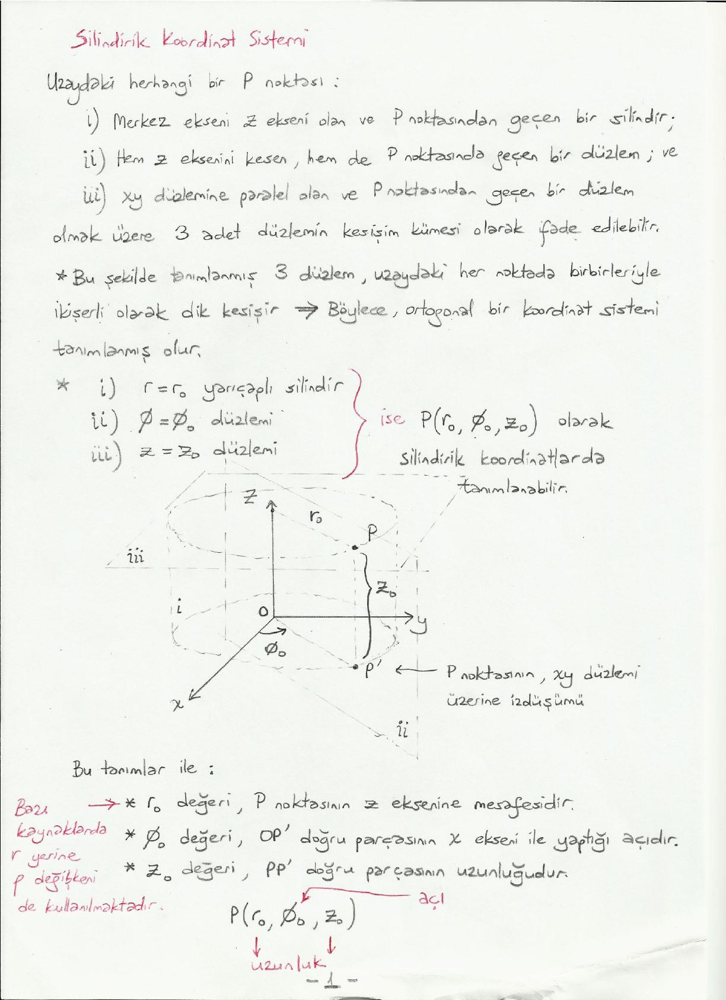
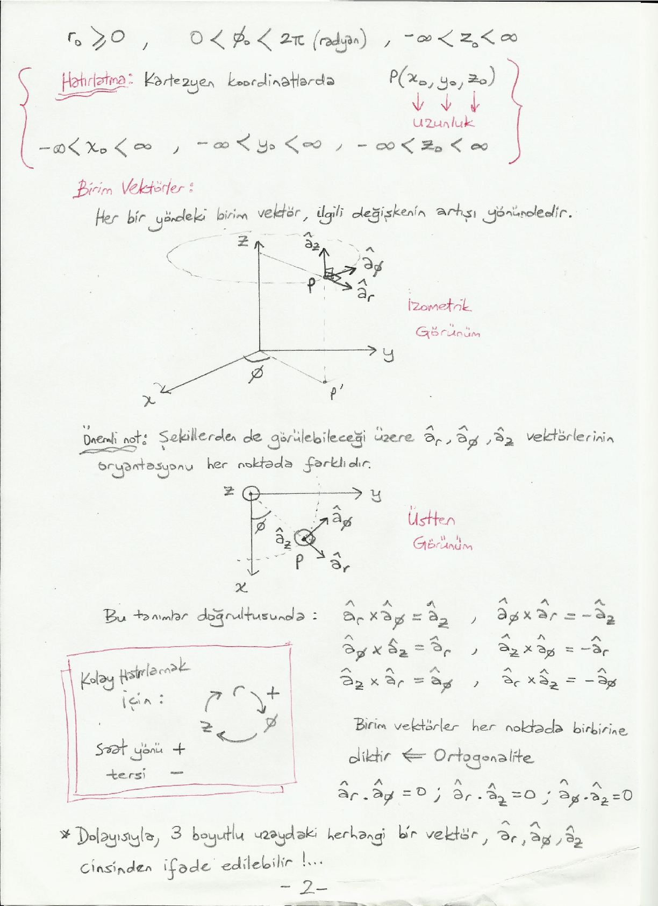
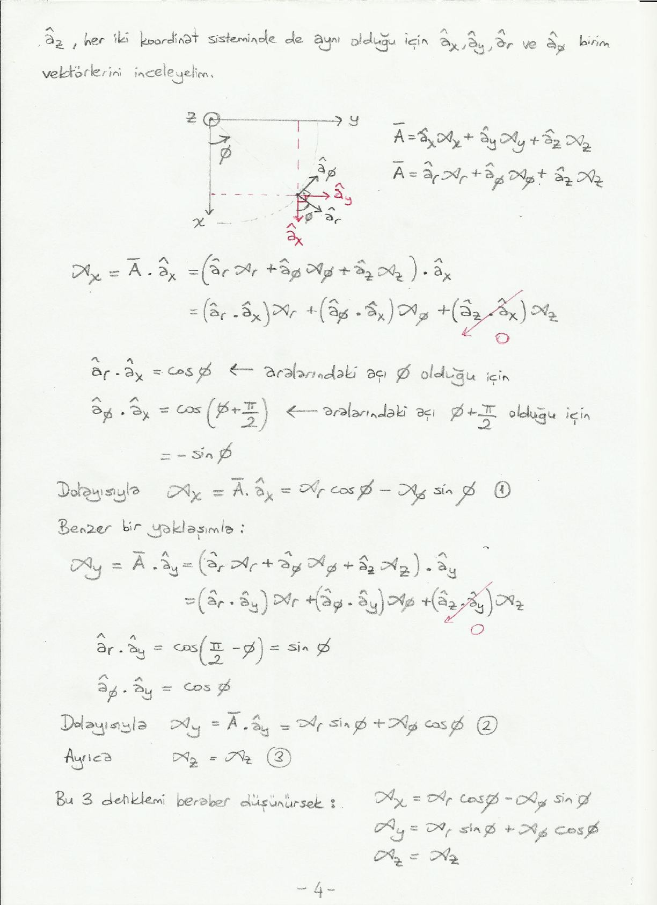
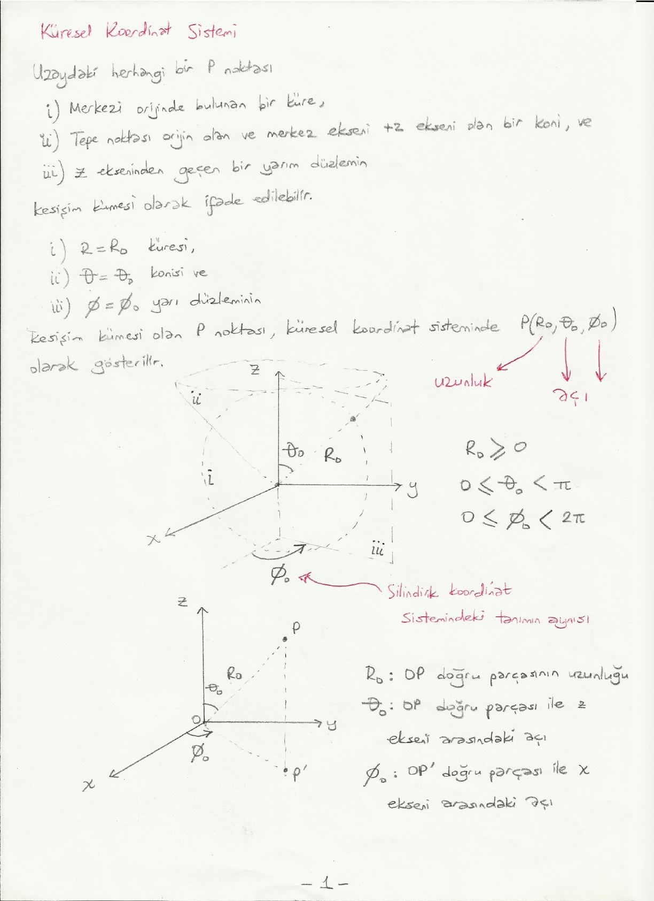
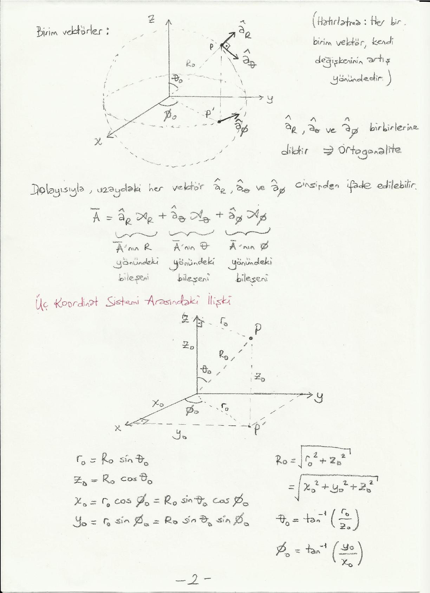

· EEM224
EEM224 Elektromanyetik I: Silindirik ve Küresel Koordinat Sistemleri (El Yazısı Ders Notu)
EEM224 – Elektromanyetik I · 17.03.2015 · 16.10.2026
Bu yazı, Başkent Üniversitesi EEM224 Elektromanyetik I dersine ait el yazısı ders notlarının iki bölümünü bir araya getiriyor: "Silindirik Koordinat Sistemi" (5 sayfa) ve "Küresel Koordinat Sistemi" (2 sayfa). Notlarda hazırlayanın adı ve tarih yazmıyor. Tanımlar ve formüller metne döküldü; üç boyutlu çizimler için sayfa görselleri eklendi. Taranmış notların orijinal PDF'leri yazının sonunda ZIP olarak indirilebilir. Önceki bölüm "Vektör Analizi" notu da arşivde ayrı bir yazı olarak yer alıyor.
Silindirik koordinat sistemi
Uzaydaki herhangi bir P noktası,
- merkez ekseni z ekseni olan ve P noktasından geçen bir silindir,
- hem z eksenini kesen hem de P noktasından geçen bir düzlem ve
- xy düzlemine paralel olan ve P noktasından geçen bir düzlem
olmak üzere 3 adet yüzeyin kesişim kümesi olarak ifade edilebilir. Bu şekilde tanımlanmış 3 yüzey, uzaydaki her noktada birbirleriyle ikişerli olarak dik kesişir; böylece ortogonal bir koordinat sistemi tanımlanmış olur.
r = r₀ yarıçaplı silindir, φ = φ₀ düzlemi ve z = z₀ düzlemi ise P noktası silindirik koordinatlarda P(r₀, φ₀, z₀) olarak tanımlanabilir. Bu tanımlar ile:
- r₀ değeri, P noktasının z eksenine mesafesidir. (Bazı kaynaklarda r yerine ρ değişkeni de kullanılmaktadır.)
- φ₀ değeri, OP' doğru parçasının x ekseni ile yaptığı açıdır (P', P noktasının xy düzlemi üzerine izdüşümü).
- z₀ değeri, PP' doğru parçasının uzunluğudur.
r₀ ve z₀ uzunluk, φ₀ açıdır. Değer aralıkları: r₀ ≥ 0, 0 < φ₀ < 2π (radyan), −∞ < z₀ < ∞.
Not: Notta açı aralığı 0 < φ₀ < 2π olarak yazılmış; φ₀ = 0 (x ekseni yönü) de geçerli bir değer olduğundan doğrusu 0 ≤ φ₀ < 2π'dir. Küresel koordinatlar sayfasında aralık bu şekilde (0 ≤ φ₀ < 2π) verilmiş.
Hatırlatma: Kartezyen koordinatlarda P(x₀, y₀, z₀) üç uzunluktan oluşur ve −∞ < x₀ < ∞, −∞ < y₀ < ∞, −∞ < z₀ < ∞.

Birim vektörler
Her bir yöndeki birim vektör, ilgili değişkenin artışı yönündedir: â_r, â_φ, â_z.
Önemli not: Şekillerden de görülebileceği üzere â_r, â_φ, â_z vektörlerinin oryantasyonu her noktada farklıdır.
Bu tanımlar doğrultusunda:
- â_r × â_φ = â_z, â_φ × â_r = −â_z
- â_φ × â_z = â_r, â_z × â_φ = −â_r
- â_z × â_r = â_φ, â_r × â_z = −â_φ
Kolay hatırlamak için r → φ → z → r döngüsü: saat yönü +, tersi −.
Birim vektörler her noktada birbirine diktir (ortogonalite): â_r · â_φ = 0, â_r · â_z = 0, â_φ · â_z = 0. Dolayısıyla üç boyutlu uzaydaki herhangi bir vektör â_r, â_φ, â_z cinsinden ifade edilebilir.

Silindirik ve Kartezyen koordinat sistemleri arasındaki ilişki
Uzaydaki her bir P noktası Kartezyen koordinat sisteminde ifade edilebileceği gibi silindirik koordinat sisteminde de ifade edilebilir. P noktasının Kartezyen gösterimi P(x₀, y₀, z₀), silindirik gösterimi P(r₀, φ₀, z₀) olsun:
- x₀ = r₀ cos φ₀
- y₀ = r₀ sin φ₀
- z₀ = z₀ (aynı)
- r₀ = √(x₀² + y₀²)
- φ₀ = tan⁻¹(y₀ / x₀)
Öte yandan uzaydaki herhangi bir Ā vektörü de her iki sistemde ifade edilebilir:
- Kartezyen birim vektörleri cinsinden: Ā = â_x A_x + â_y A_y + â_z A_z
- Silindirik birim vektörleri cinsinden: Ā = â_r A_r + â_φ A_φ + â_z A_z
Burada â_r A_r, Ā'nın r yönündeki; â_φ A_φ, φ yönündeki; â_z A_z, z yönündeki bileşenidir. z değişkeni her iki koordinat sisteminde aynı şekilde tanımlandığı için (â_z'ler aynı olduğu için) A_z'ler aynıdır. Soru: A_x, A_y ile A_r, A_φ arasındaki ilişki nedir?
Bileşenlerin dönüşümü
â_z her iki sistemde aynı olduğu için â_x, â_y, â_r ve â_φ birim vektörlerini inceleyelim:
A_x = Ā · â_x = (â_r A_r + â_φ A_φ + â_z A_z) · â_x = (â_r · â_x) A_r + (â_φ · â_x) A_φ + (â_z · â_x) A_z
Burada â_z · â_x = 0'dır ve
- â_r · â_x = cos φ (aralarındaki açı φ olduğu için)
- â_φ · â_x = cos(φ + π/2) = −sin φ (aralarındaki açı φ + π/2 olduğu için)
Dolayısıyla A_x = A_r cos φ − A_φ sin φ (1)
Benzer bir yaklaşımla:
- â_r · â_y = cos(π/2 − φ) = sin φ
- â_φ · â_y = cos φ
Dolayısıyla A_y = A_r sin φ + A_φ cos φ (2). Ayrıca A_z = A_z (3).

Bu üç denklem matris biçiminde yazılırsa:
| A_x | | cos φ −sin φ 0 | | A_r |
| A_y | = | sin φ cos φ 0 | | A_φ |
| A_z | | 0 0 1 | | A_z |Ortadaki matrise T denirse bu matris denklemi A_x, A_y, A_z'yi A_r, A_φ, A_z cinsinden yazmamızı sağlar.
Soru: A_r, A_φ, A_z'yi A_x, A_y, A_z cinsinden nasıl yazabiliriz?
- Çözüm 1: Bir önceki yaklaşıma benzer şekilde: A_r = Ā · â_r = (â_x A_x + â_y A_y + â_z A_z) · â_r, A_φ = Ā · â_φ = (â_x A_x + â_y A_y + â_z A_z) · â_φ, A_z = A_z.
- Çözüm 2: Yukarıda elde ettiğimiz T matrisinin tersini (T⁻¹) hesaplarsak [A_r A_φ A_z]ᵀ = T⁻¹ [A_x A_y A_z]ᵀ.
Küresel koordinat sistemi
Uzaydaki herhangi bir P noktası,
- merkezi orijinde bulunan bir küre,
- tepe noktası orijin olan ve merkez ekseni +z ekseni olan bir koni ve
- z ekseninden geçen bir yarım düzlemin
kesişim kümesi olarak ifade edilebilir. R = R₀ küresi, θ = θ₀ konisi ve φ = φ₀ yarım düzleminin kesişim kümesi olan P noktası küresel koordinat sisteminde P(R₀, θ₀, φ₀) olarak gösterilir. R₀ uzunluk, θ₀ ve φ₀ açıdır.
- R₀: OP doğru parçasının uzunluğu
- θ₀: OP doğru parçası ile z ekseni arasındaki açı
- φ₀: OP' doğru parçası ile x ekseni arasındaki açı (silindirik koordinat sistemindeki tanımın aynısı)
Değer aralıkları: R₀ ≥ 0, 0 ≤ θ₀ < π, 0 ≤ φ₀ < 2π.
Not: θ₀ için notta 0 ≤ θ₀ < π yazıyor; −z ekseni üzerindeki noktalar θ₀ = π ile gösterildiği için aralık genellikle 0 ≤ θ₀ ≤ π olarak verilir.

Birim vektörler
Her bir birim vektör kendi değişkeninin artış yönündedir. â_R, â_θ ve â_φ birbirlerine diktir (ortogonalite). Dolayısıyla uzaydaki her vektör â_R, â_θ ve â_φ cinsinden ifade edilebilir:
Ā = â_R A_R + â_θ A_θ + â_φ A_φ
Burada terimler sırasıyla Ā'nın R, θ ve φ yönündeki bileşenleridir.
Üç koordinat sistemi arasındaki ilişki
- r₀ = R₀ sin θ₀
- z₀ = R₀ cos θ₀
- x₀ = r₀ cos φ₀ = R₀ sin θ₀ cos φ₀
- y₀ = r₀ sin φ₀ = R₀ sin θ₀ sin φ₀
- R₀ = √(r₀² + z₀²) = √(x₀² + y₀² + z₀²)
- θ₀ = tan⁻¹(r₀ / z₀)
- φ₀ = tan⁻¹(y₀ / x₀)
